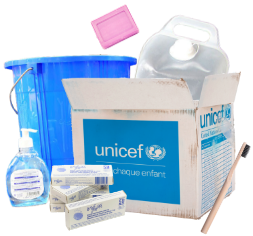

Promote universal access to primary healthcare
Combat infectious and epidemic diseases
The idea is to widely provide healthcare in areas where poverty is striking.
- Deploy mobile clinics
- Train local healthcare workers
- Provide essential medecines in underserved areas
We organize vaccination, prevention, and screening campaigns for diseases such as :
The objective is to reduce by 15% the number of deaths due to these diseases.
Improve maternal and child health
Large distribution of emergency hygiene kits
Infant mortality is really high when appropriate healthcare is not provided. The main points we want to work on are :
- Implement prenatal care programs
- Ensure safe childbirth practices
- Support child nutrition in high-risk regions
Distribute 100,000 emergency hygiene kits per year in areas affected by natural disasters or conflicts including:
- Soap
- Antiseptics
- Sanitary pads
- Masks
This basic yet necessary hygiene can prevent the appearance of deadly diseases and infections.
